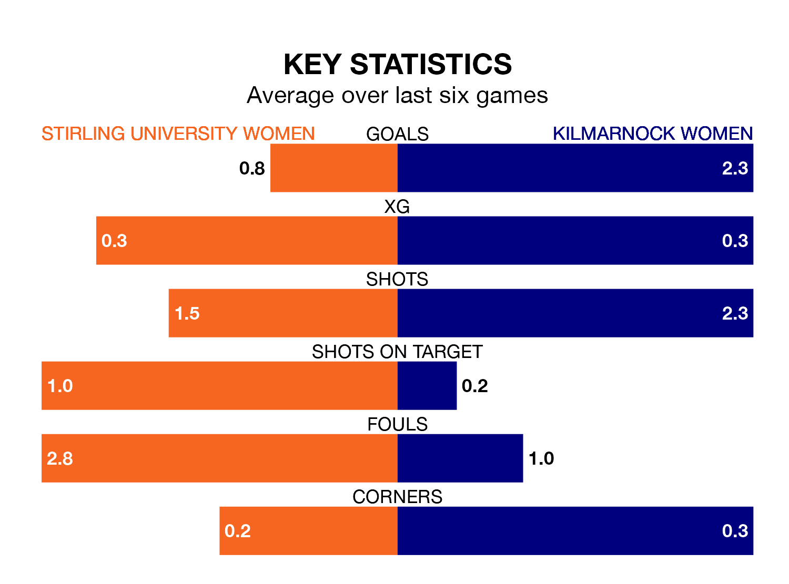

Struggling Stirling University Women face Kilmarnock Women at Gannochy Sports Centre Stirling University on Sunday looking to build on a win in their last league outing.
After securing all three points with a 1-6 victory over Queen's Park Women on April 14, Stirling University sit bottom of SWPL 2.
They travel to play a Kilmarnock side second in the standings, who lost in their last match, 1-0 against Glasgow Women.
With 18 goals in 23 games so far this season, Stirling University are the league's lowest scorers with 0.8 goals per game. And they are conceding more than average, letting in 76 goals at a rate of 3.3 per game.
Kilmarnock, meanwhile, are above average scorers, with 2.4 goals per game, compared to a league average of 1.8. They have conceded 1.3 goals per game.
In the last 10 years, Stirling University and Kilmarnock have played each other on 13 occasions. Stirling University won one of them, Kilmarnock 10, and they drew twice.
On average, Stirling University scored 0.6 goals and Kilmarnock 3.5 in those matches.
Their last meeting was on February 18, when Kilmarnock won 10-0 at home.
The home side are in bad form in SWPL 2, with one win and a draw from their last six games.
With two wins and two draws over that period, the visitors' form is better – they have taken eight points from 18, compared to Stirling University's four.
Updated: 11:31 (UTC), 15/04/24